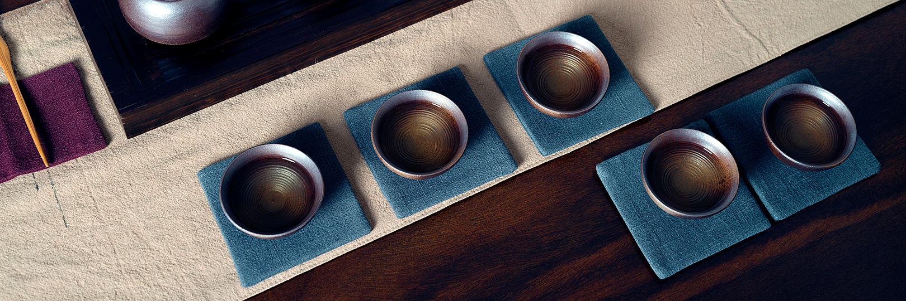

茶知識語錄
-
談談『福爾摩沙』茶葉
-
- 1. 福爾摩沙 茶葉的歷史？
台灣烏龍茶種原源自於清朝時期福建地區移種，也於廈門、福州帶進了烘焙加工製茶技術，清末時期臺灣茶的海外市場急速擴大，茶葉銷往國際，成為最重要的飲料作物，也造就大稻埕地區第一波的貿易黃金時期。
日治時期發展包種茶及紅茶，在三義、平鎮、魚池等地成立茶業研究機構，從事區域性茶樹栽培、育種等研究，光復後二二八事件政府因實施「出口結匯辦法」，使台灣茶經營陷入困境，因而照中國大陸製做綠茶的方法製造綠茶出口外銷。
茶產業在台灣發展 120 多年，成為台灣獨特產業，雖然種原及製茶技術來自於中國大陸，但近十年來台灣也塑造出獨特茶飲文化，使台灣茶特色及良好滋味香氣受到世界公認。
- 2. 台灣烏龍茶特色是甚麼？為甚麼？
茶種樹型分為喬木及灌木，葉型分為大葉種及小葉種，而台灣烏龍茶特色均為灌木小葉種。
但何謂灌木、喬木，何謂小葉種、大葉種呢？
灌木型：沒有明顯的主幹(樹幹)，分枝(樹枝)現像從土裡根部於地面直接展開，故樹形矮小，葉片也較薄小，反之多酚類（兒茶素）含量較低，顧名思義葉型稱為『小葉種』，灌木雖小但抵抗力較喬木強，抗寒及抗旱且成長率較高，適宜製成綠茶及烏龍茶。
喬木型：具有獨立的主幹(樹幹)，主幹離地面 30 公分以上才有分枝(樹枝)現象，使樹幹和樹冠能明顯區分，形成一棵樹的外型，故樹形較大，葉片及芽頭也較厚大，芽葉中多酚類（兒茶素）物質含量高具有滋味濃強的特點，顧名思義葉型稱為大葉種，適宜製成紅茶。
由上述說明，台灣烏龍茶的代表樹品種均為『灌木型小葉種』，具有在台灣這片地落地生根、根深柢固，逆境求生、堅韌不催的特質，並在高山產區抗寒，成就出台灣高山烏龍茶，更在各種大自然優劣環境條件下成就出台灣特色烏龍茶。
- 3. 台灣特色烏龍茶產區介紹
台灣特色烏龍茶可分為文山包種茶、凍頂茶、白毫烏龍茶、高山茶四大類，產區亦可分為高海拔產區、低海拔、特色茶產區及飲料市場原物料供應產區…等。
- 台灣特色茶東方美人產區位於新竹縣峨眉、新竹縣北埔、苗栗。
- 高海拔六大山頭產區分別有南投縣杉林溪、南投縣合歡山、南投縣大禹嶺嘉義縣阿里山、玉山、台中市梨山，海拔 1000 公尺以上的高山茶區，可稱為「台灣高山烏龍茶」。
- 低海拔茶產區文山區，包含木柵、坪林、石碇，以包種茶、鐵觀音為主要茶種。
台灣飲料市場原料供應產區為南投縣名間鄉產區，以金萱茶、翠玉茶、四季春、青心烏龍為主要茶種，松柏嶺茶區產量最多，蔣經國將此茶區茶葉命名為「松柏長青茶」。
- 4.烏龍茶的品飲與收藏價值?
收藏的樂趣是在於對收藏品項的衝動和感動，並觸發對收藏品的學習、考證，投資達人曾在理財周刊說到:買茶前得先弄懂茶葉的產區、製法、茶種，而且要親自品嘗，記住茶的味道、氣味、色澤，更要選自己喜歡的茶，「最重要的是，有經驗的茶友，要退回原點，沒經驗的初學者，就從原點開始。」
從「粗製茶」的毛茶到「精製茶」，以手工篩撿出的茶葉配合精製製程，屬於競賽級的茶葉等級，是為上選，更由於每年比賽茶得獎數量有限，在物稀價貴的條件下，競賽級茶葉就越炒越貴，受農會監製與專業評審把關之下，裝於競賽單位特選過的甕裡更是最佳貯存方式，全經過最標準包裝，更可降低影響收藏品的價值可能，讓收藏者更容易保存、輕鬆投資，這一來也不會遇上基金、股票會帶來的投資風險。
好比巴菲特認為正確的投資方法:把所有雞蛋放在一個籃子裡，然後看好這個籃子。
而成茶存放（０～５年）為新茶，（5～10年）為舊茶，（10～20年）為陳茶，（20年以上）將為老茶，收藏老茶的價值在於時間的催化，想讓老茶自然轉換怡然香氣除了茶葉本質要好也必須有良好的貯存方式和空間，否則茶葉很容易劣變，因此許多人收藏當季競賽級茶葉，除了有農會防偽封條，也清楚的標註年份日期，收藏者擺放幾十年也不怕忘記收藏歷史，以1斤1萬元的當季競賽級茶葉來說，如果放超過10年，價值會翻倍漲，15年變成4倍、20年變成10倍、25年漲到10倍以上，如果放到30年，甚至可以漲到1斤100萬，等於放越久越珍貴。
-
台灣烏龍茶製茶工藝之美
-
- 1. 台灣烏龍茶製作過程發生甚麼變化?
茶葉種類依發酵程度可分為:不發酵茶、部分發酵茶、全發酵茶，而台灣烏龍茶為部分發酵茶。
步驟1. 茶葉日光萎凋: 藉由日光約 35~38 度使茶菁裡的部分水分蒸散。
步驟2. 室內萎凋攪拌: 移至室內進行室內萎凋攪拌，室溫保持於 23~25 度，酵素緩催化多酚進行氧化聚合，形成茶的色、香、味，將苦澀轉為甘醇。
步驟3. 炒菁(炒茶): 利用高溫破壞酵素活性藉以停止茶葉的發酵，消除茶葉的臭青味，並讓茶菁變的更柔軟，茶葉殺菁一般溫度在 250~300 度之間，炒到茶葉稍有乾燥感即可。
步驟4. 揉捻: 破壞茶菁細胞結構，讓內部的茶汁流出附著於表面，增加沖泡時的風味，並達到整形的目的。
步驟5. 乾燥: 鈍化酵素活性，使茶葉完全停止發酵，將茶葉水分降至 3%~5%，上乾燥機的同時篩除較明顯的老葉、茶梗及各種雜質，保持穩定品質及固定茶葉形狀，完成乾燥作業後的茶即是所謂的『台灣烏龍茶毛茶』。
- 2. 台灣烏龍茶後製精工烘焙特色
從「粗製茶」的毛茶到「精製茶」，以手工篩撿出的茶葉配合精製製程，屬於競賽級的茶葉等級，是為上選。從低於10°C或日夜溫差大的高山上，到了超過百度的殺菁，再到 4、50 度到 8、90 度的轉溫，回到 20 幾度的恆溫靜置回潤，每一個溫度都是可以成為茶香茶味變化的關鍵。以焙茶師的專業將茶品慢慢地將茶葉用最適性的修整，達至近乎完美的狀態。
「焙茶師」依照每一種茶品的獨有特性或根據經與焙茶師專業建議下的客製化口味需求，以經過一段、二段、三段、更勝是超過十次的文火炭焙的方式，雍容地進行修整茶性，堅持不採一段式的倉促趕工而使茶葉表面焦化。
在每一段的烘焙中，亦皆予以茶葉充分的靜置回潤，靜置的時間長短，也會依溫度、濕度及其他環境或茶品的條件下，放置數天或數月以上。休置的過程中，給予茶葉時間，慢慢地讓深層咖啡因等物質回至外層後，再進入下一階段的焙火，並讓其中的咖啡因等物質階段性地慢慢部分排清，使得茶葉的特性更加柔和，使得茶香順而精潤有致。
-
台灣競賽茶語錄
-
- 1. 風靡全球的台灣競賽茶葉？
南投縣鹿谷鄉農會凍頂烏龍競賽(競賽全名: ｘ年春（冬）季高級凍頂烏龍茶展售會)最具台灣競賽茶葉代表，於民國 65 年由當時的省政府農林廳輔導鹿谷鄉農會辦理第一屆的春茶比賽展售會，至今南投縣鹿谷鄉農會凍頂烏龍茶組競賽已有 40 多年的歷史。
為確保品質，幫助消費者選購，因此品質控管相當嚴格，競賽茶的包裝也是日新月異，為台灣競賽茶奠定良好基礎，並受農會、生產合作社、協會監製，與行政院農業委員會茶業改良場專業評審及農藥檢驗把關，現由國家級茶業專家(現任茶業改良場官員)評鑑分級，淘汰率高達 50%，第一級(特等、頭等)獲獎率僅近於 10%，由於評審的茶樣編號是經由電腦隨機編成密碼，再將磁碟片封籤保管，因此評審時是絕對能保持中立客觀的態度，連初審人員自己繳交的茶，也常常被自己刷下來而不自覺。
謹慎的評審及較高的淘汰率，鹿谷鄉農會推廣股單位曾說過「世界上最好的東西量一定很少」，這也促使南投縣鹿谷鄉農會凍頂烏龍茶組競賽茶品質及價格屹立不搖，也在中國市場深耕多年，使凍頂烏龍茶也成為臺灣特色茶代表之一。
推廣股單位說到: 參賽者有 5 千多件，世界上再也找不到這麼大的茶比賽了，能從中脫穎而出，當然是公認的唯一。這場比賽茶就是要穩住凍頂烏龍的品牌，如果沒有這場比賽，可能大家會越做越青，就走不出凍頂茶的特色；有評審、有標準就能把凍頂茶的品質穩住，不被拉走而能走出獨特。
因此南投縣鹿谷鄉農會舉辦凍頂烏龍茶比賽不論是競賽前置作業、內部評審過程及包裝作業到公佈得獎名單，40 多年以來秉持著刺激茶農加強茶園管理，提昇製茶及焙茶技術，達提升茶葉品質，進而成為風靡全球的台灣競賽茶葉。
-
藏茶小撇步與奧妙
-
- 1. 烏龍茶如何存放？
再高品質的非競賽級烏龍茶也是需要嚴謹的貯存，而貯存有三大基本條件：
- 空氣
- 濕度
- 溫度
三大要素把關完全，發酵越重，焙火越重其茶乾在貯存過程中接觸適當的氧氣將會自然釋出沒食子酸，且轉換為淡梅或烏梅酸香及木質香。
而茶倉選擇則是附加關鍵，能使茶葉事半功倍的加速轉化，茶倉材質有許多種，錫、鐵、瓷、陶、紙、竹、紫砂…等，如計畫收藏陳茶品就須因應茶葉的特性不同，選擇所適的貯存容器，茶葉便能在倉內繼續呼吸、舒展陳化、聚香…等，多年後取出也較不易發霉或變味。
陶甕為較常見的陳茶貯存容器，尤其未上釉陶的材質透氣性較佳，茶葉在透氣性較佳的陶甕裡能加速轉化，及修飾茶葉香氣滋味，能讓陳茶口感更綿密滑順，適合貯存中重發酵及重焙火茶品。
香氣較艷麗的茶品及發酵度較輕的茶葉則適宜貯存於裡外上釉的陶甕或是瓷器中，不透氣的材質容器可以達到較為「密封」的效果，能聚集茶品的香氣，使香氣不易流失。
- 2.高品質烏龍茶具備哪些標準?
欲成為高品質烏龍茶，必須在毛茶當中，透過挑茶梗、老葉、各種雜質，再配合焙茶工藝…等精製製程，由繁複手續提升茶葉品質，藉以減少苦澀度，讓茶湯更順口，製成競賽級茶葉等級，便為上選。雖然各大高品質茶葉競賽品評規則及注重的配分不同，但基本的條件標準絕對是相同的。
基本四大條件:
- 深墨綠、色澤均勻
- 茶乾乾燥適度無受潮
- 香氣輕揚滋味順爽不雜
- 葉底鮮嫩、柔軟、厚實堅壯
各大高品質茶葉競賽標準評茶程序:
- 賞外觀
- 輕輕手捧一把茶葉，如茶葉摸起來較脆弱可輕輕捻碎且不黏手，可初步判斷出茶葉有達到一定的乾燥程度。
- 茶葉中大小形狀及外觀顏色均勻一致，紅、褐、黃、綠色相間，沒有太多的茶枝茶梗…等雜質
- 看水色
- 必須澄清明亮，不可混濁、灰暗或含太多碎末及沈澱物和懸浮物。
- 品滋味
- 香氣與滋味一定要甘醇順口，滋味不能苦、澀或有異味和沒有活性，香氣要清揚，絕不能帶油耗味、悶味、焦味、陳味、煙味、臭菁味、霉味…等各種不該屬於茶本身的雜味。
- 賞葉底
- 專業識茶人士從葉底便能得知茶葉是否發酵適當、炒菁是否均勻、揉捻輕重度是否適宜…等茶葉狀態，及充分得知茶菁原料之老嫩度、品種、採摘法等，與各種不該屬於茶本身的雜味。
- 3.陳年烏龍茶特色及標準
成茶存放（０～５年）為新茶，（5～10年）為舊茶，（10～20年）為陳茶，（20年以上）將為老茶，看得出來要擁有值錢的老茶得花上很長一段時間，因此坊間有許多用新茶焙烤方式烘焙出來的作假老茶，便為近年茶商發展出來的行銷手法，利用高溫烘焙使茶葉外觀呈現炭化的黑色，謊稱是陳年老茶，喝了容易上火，甚至有鎖喉之感覺。真正的老茶是不會有炭味（焦味），不經過高溫焙火改變其風味的原茶一路妥善貯存，讓原茶經過時間長期自然陳化，自然釋出沒食子酸，且轉換為淡梅或烏梅酸香及木質香，因此不經過焙火改變其風味的老茶需要原茶本身品質良好且貯存方式非常完善，是非常不容易的。
優質的老茶茶乾香氣並非明顯，如茶乾味道較為艷香刺鼻時，代表茶葉乾燥到不夠，茶香氣只留在表面，茶葉中心並無滋味內涵，且不宜有太多的茶枝茶梗，茶枝茶梗中水含量較高，會使茶湯帶來苦、澀，這時必須經過焙茶師文火乾燥處理，低溫文火所促使的梅納反應會將茶葉自身原來的某些化合物的結構分解，成就新物質的醇化。進而造就出入口滑順甘潤、綿密厚實、甘甜無刺激性的茶湯滋味，久泡不澀且非常耐泡。
各大高品質陳年烏龍茶茶葉競賽標準評茶程序:- 賞外觀
1.輕輕手捧一把茶葉，如茶葉摸起來較脆弱可輕輕捻碎且不黏手，可初步判斷出茶葉有達到一定的乾燥程度。
2.半球型緊結為標準，葉面褐色微紅，細梗微紅褐色，葉面偶有霜化現象，沒有太多的茶枝茶梗…等雜質。
3.葉綠、葉黃、葉黑、暗黑、黃綠者非上品。 - 聞茶乾
1.茶乾氣味微酸，帶有特殊陳香，輕揚不刺激且不帶焦味。 - 看水色
1.必須澄清明亮，不可混濁、灰暗或含太多碎末及沈澱物和懸浮物，湯色澄清，顏色琥珀色、橙褐色、棕褐色為佳。
2.湯色混濁，渣多、黃黑、暗黑、黃綠者非上品。 - 品滋味
1.入口綿密滑順，入喉恬逸清涼不燙口，滋味不能苦、澀或有異味，香氣要清揚、後韻無窮。
2.茶湯味淡，澀生、焦味、重酸味、酸臭味者非上品。 - 賞葉底
1.展開完整、膨鬆乾爽為佳。
2.葉底不展開非上品。
- 賞外觀
-
台灣六大特色茶品
-
- 1. 高山蜜香烏龍茶（熟香型、清香型）
蜜香，源自小綠葉蟬刺吸而產生的天然恩賜，清香型茶品製成後轉化綴成獨特花蜜香；濃韻型茶品是再以重烘焙精工製程，兩型茶款特色皆為喉韻悠長、入口回甘，茶湯琥珀又鮮亮明澈、飲之如蜜的優雅甜香久久不散，漣漪漫佈在口中為最大特點。冷泡飲用更具風味。
- 2. 日月潭紅玉紅茶
台灣特色 18 號紅茶，水沙連獨具風格的優質茶品，產製時採摘極嫩芽葉，使茶湯香氣優雅迷人、滋味柔順甘甜，沖泡後葉面展開細緻嬌嫩，在橙紅茶湯中特顯高雅，冷泡或置入冰塊，風味更是清新爽口。
- 3. 極精工炭香烏龍茶
傳承了傳統的製茶精神，使用台灣龍眼木炭文火炭焙，再現傳統炭焙精工製程。因為每一個溫度都成為茶香茶味變化的關鍵，所以適性適時地進行修整茶性，決不倉促一味趕工而使茶葉表面焦化。在極細緻精工的過程中，焙茶師都予以最大心力使茶葉的特性更加突出又柔和，讓茶湯色澤帶有金黃油光、讓滋味交織花果香與醇濃的炭焙火香，讓茶體口感飽滿豐富。
- 4.艷夏紅烏龍
滋味，如名！此款台灣特色創意茶品結合了烏龍茶與紅茶的特點與品質，茶湯色呈琥珀與紅茶明亮的相互輝映，豐厚的熟果香滋味似烏龍茶，融合了兩味茶款的扎實底蘊，顯現茶湯柔情俠義的特色，張揚了多層次豐富滋味。冷泡飲用甜蜜果香滋味更加顯現。